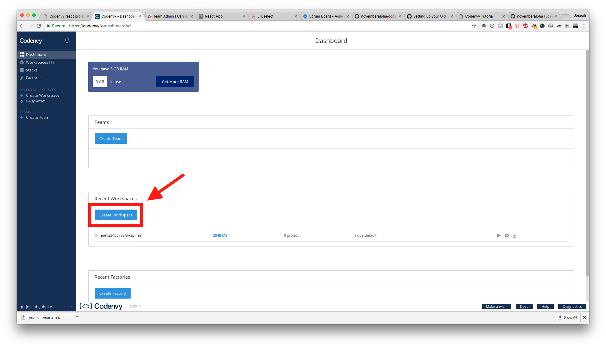
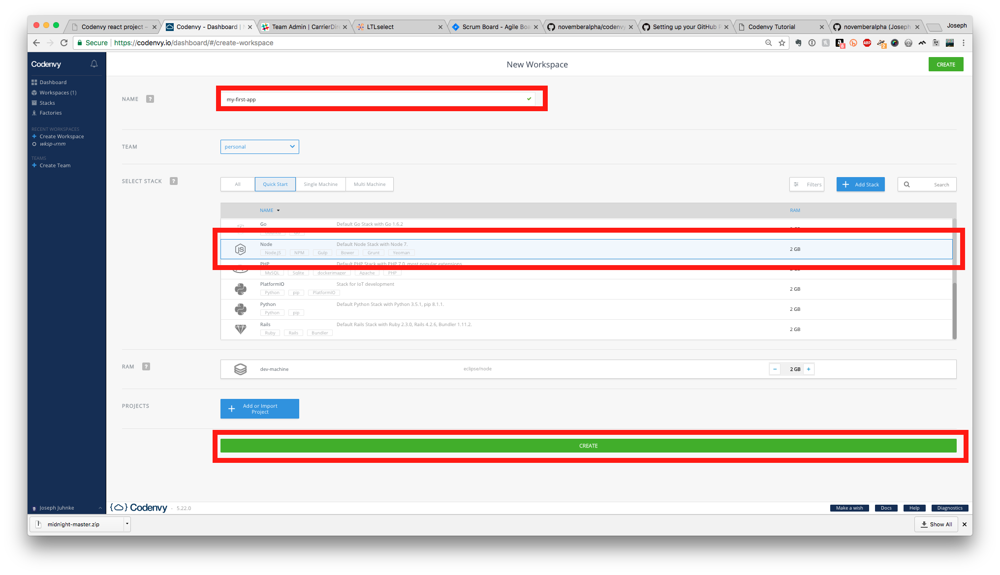
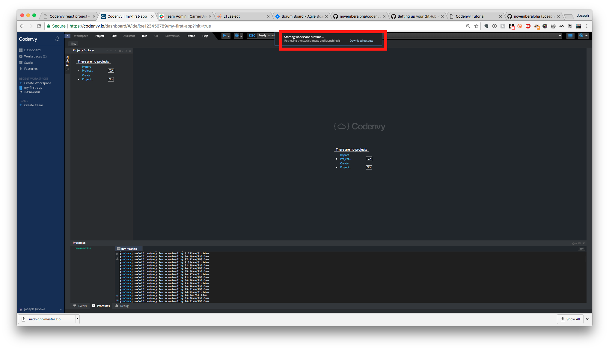
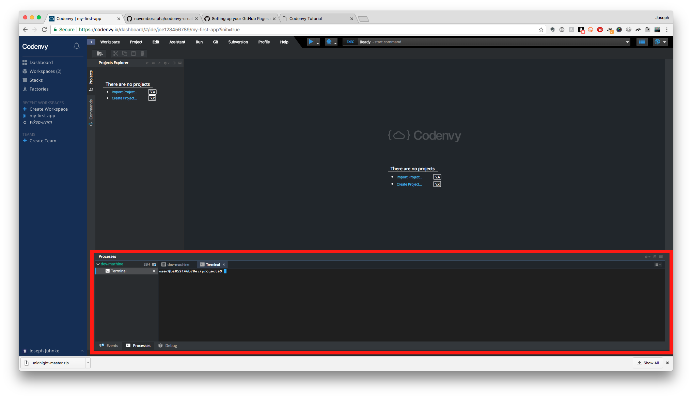
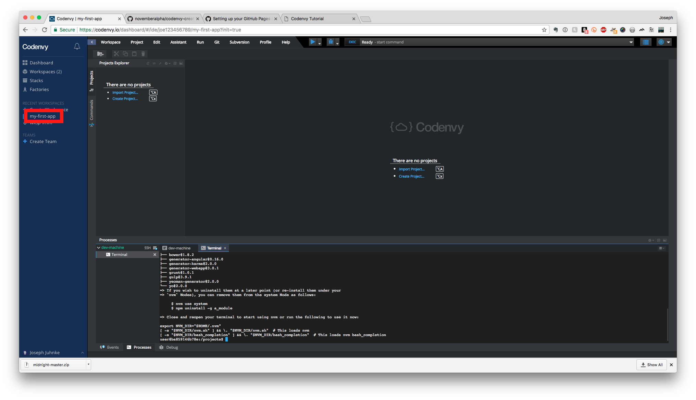
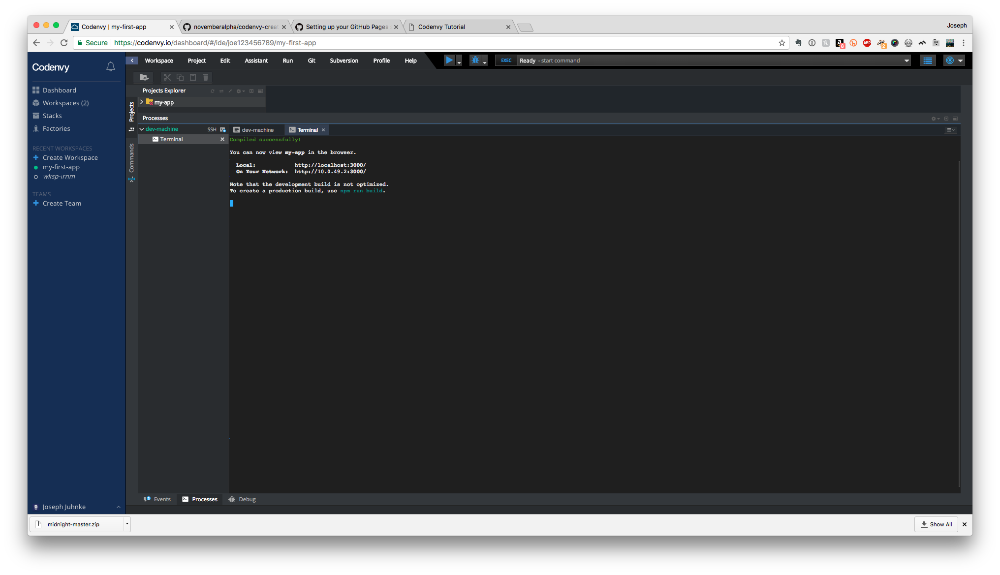
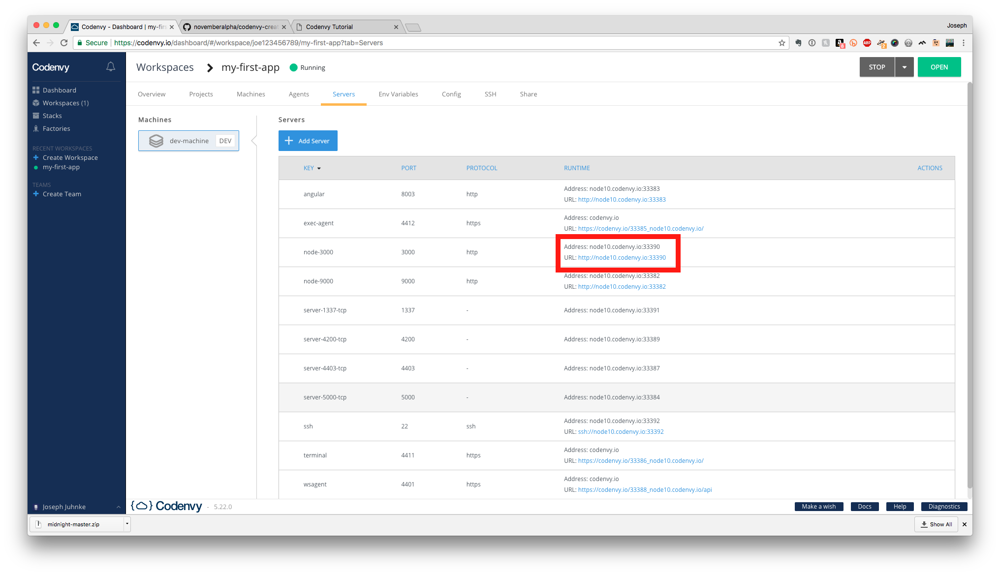
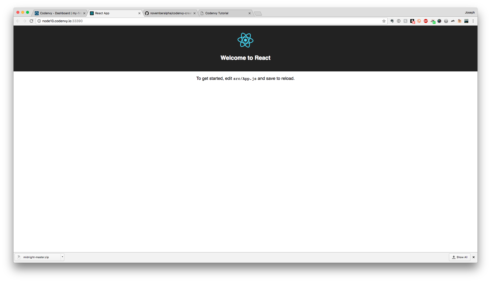

Build your first react application using Codenvy
Take the pebble from my hand!
Project maintained by Joe Juhnke
This project is released under the terms of the MIT license.
- Sign up for a Codenvy account
- From Dashboard Choose "Create Workspace"

- Name your workspace, select "Node" from the quickstart stack, and click the Create button

- Wait for your workspace to spin up

- A terminal will open. This is where you will need to enter the following command:

$ curl -o- https://raw.githubusercontent.com/creationix/nvm/v0.33.8/install.sh | bash
Click on your workspace link to reopen the page with a fresh terminal

Enter these commands. Replace "NAME" with your app's name. Hit enter after each line:
$ nvm install 8.9.1
$ nvm current
$ npm install -g create-react-app
$ create-react-app NAME
$ cd NAME
$ npm install
$ npm start

Once you have a compiled app running you must get the url to see the application.

Click on the link for port 3000 and WALAH! It opens in another

You may now edit app.js, save the file and refresh the view page to see your changes show up.
Have Fun!